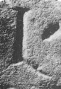

L - type2.2
Script
Latin
Grapheme
L
Allograph
type2.2
Characteristic form:
bottom-bar is curved
bottom-bar is diagonal
downstroke is vertical
Typology
Full typology of allographs
More general types
type2
Exemplar

Inscription ISic000177
.
Origin: Thermae Himeraeae
between AD 101 and AD 300
Other examples